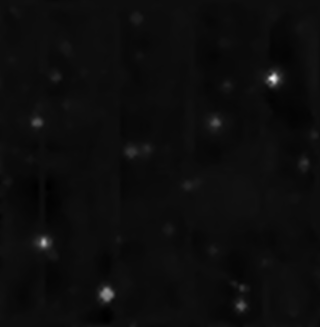
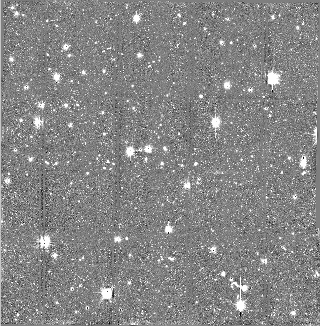
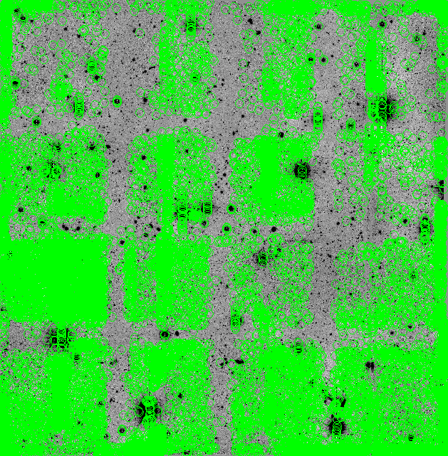
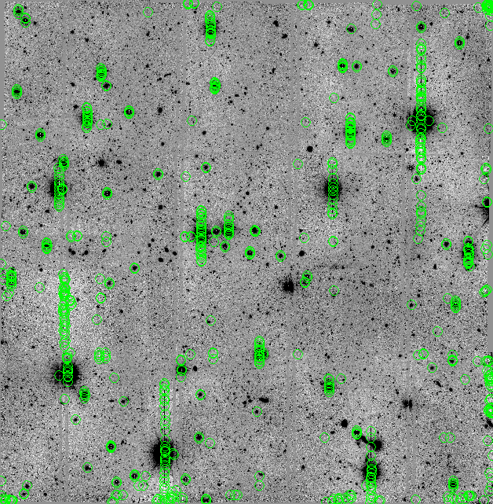
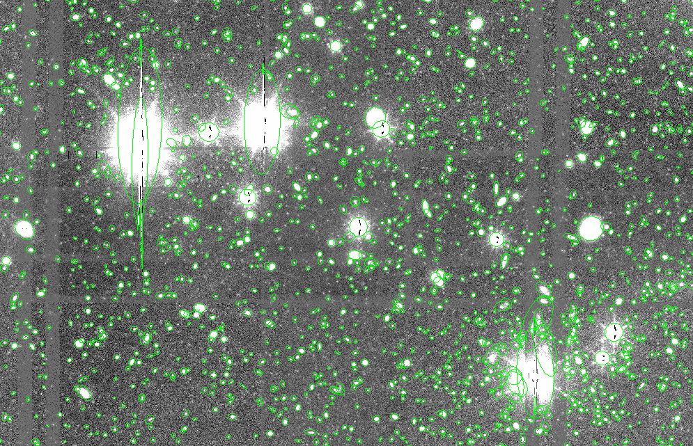
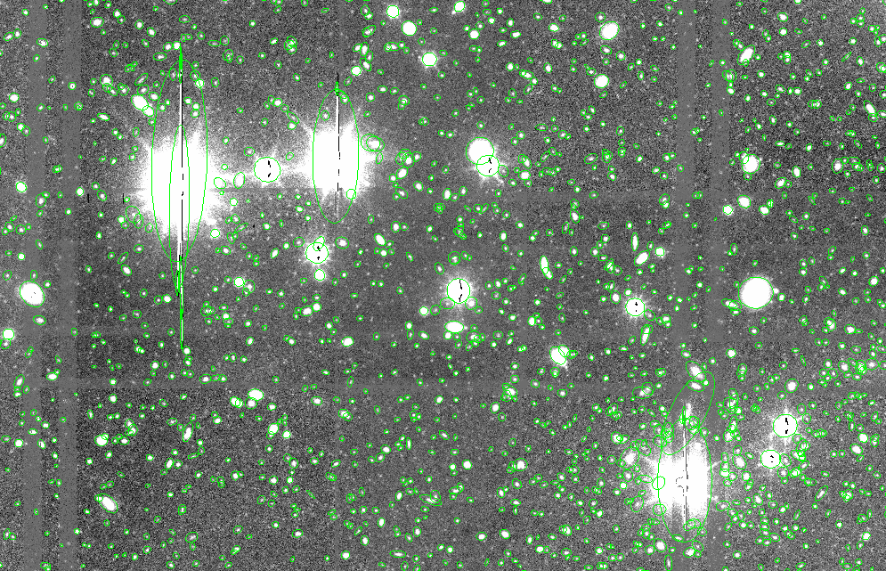
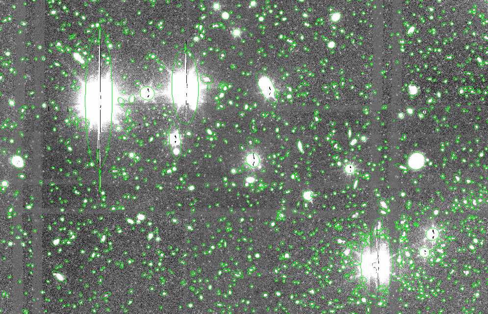

Vamos a hacer más pruebas del mismo campo como en la imagen de SUBARU, ahora sera con la imagen obtenida del Gran Telescopio de Canarias (GTC). Vamos a determinar los parámetros necesarios empezando por leer el header de la imagen .fits
GAIN |
0.95 |
CD1_1 |
$2.46216202880408\times10^{-07}$ |
CD2_2 |
$-2.2353063470549\times10^{-07}$ |
Con los valores anteriores podemos determinar PIXEL_SCALE que es de aproximadamente 0.254 arcsec/píxel, y para determinar el seeing vamos a hacer una primera corrida en SExtractor solicitando los siguientes parámetros:
FLUX_RADDIUS
CLASS_STAR
MAG_AUTO
FLAGS
SNRCon esto vamos a determinar ese parámetro, ya que:
$$ \text{FWHM}=2\cdot \text{FLUX RADIUS} $$
A este catálogo le aplicamos algunos filtros como CLASS_STAR > 0.9, FLAGS < 4 y MAG_AUTO < 20 , y calculamos el seeing, obteniendo un SEEING_FWHM de 2.224 píxeles o 0.565 arcsec, y el filtro de convolución que aplicaremos con SExtractor será gauss_2.0_3x3.conv.
Con estos parámetros listos, podemos empezar a determinar el BACKGROUND de la imagen, empezando con los valores predeterminados para BACK_SIZE y BACK_FILTERSIZE con 64 y 3.


En las imagenes de chequeo anteriores podemos notar que el background sustraído por SExtractor contiene una parte de algunas estrellas saturadas presentes en la imagen, además de algunas de las marcas con las que se unió la imagen. Dejaremos estos valores predeterminados.
Posteriormente, vamos a determinar los niveles de umbral de detección, es decir, los valores de DETECT_THRESH y ANALYSIS_THRESH, para ello, primero vamos a usar la imagen negativa para determinar si hay detecciones falsas y seleccionar nuestro nivel de umbral.

Observando la imagen anterior, podemos darnos cuenta que los valores predeterminados de 1.5 para ambos parámetros no es suficiente, probaremos con (2.0,2.5,3.0 y 3.5).
DETECT_THRESH, ANALYSIS_THRESH |
Objetos detectados | Objetos extraidos |
|---|---|---|
| 1.5,1.5 | 24528 | 17787 |
| 2.0,2.0 | 5322 | 3721 |
| 2.5,2.5 | 1719 | 1271 |
| 3.0,3.0 | 871 | 749 |
| 3.5,3.5 | 646 | 591 |
Para este caso en particular vamos a elegir un valor de $3.0$ ya que es donde parece que empieza a estabilizarse estas falsas detecciones.

El valor de DETECT_MINAREA se quedara en el valor predeterminado de 5, con esto podemos pasar a determinar el valor de DEBLEND_MINCONT para 32 niveles de detección, para ello vamos a probar valores de (0.001, 0.005, 0.01, 0.05, 0.1 y 0.5).
DEBLEND_MINCONT |
Objetos detectados | Objetos extraidos |
|---|---|---|
| $0.001$ | $23995$ | $21155$ |
| $0.005$ | $23518$ | $20833$ |
| $0.01$ | $23211$ | $20641$ |
| $0.05$ | $22653$ | $20158$ |
| $0.1$ | $22444$ | $19929$ |
| $0.5$ | $22248$ | $19719$ |



DEBLEND_MINCONT.